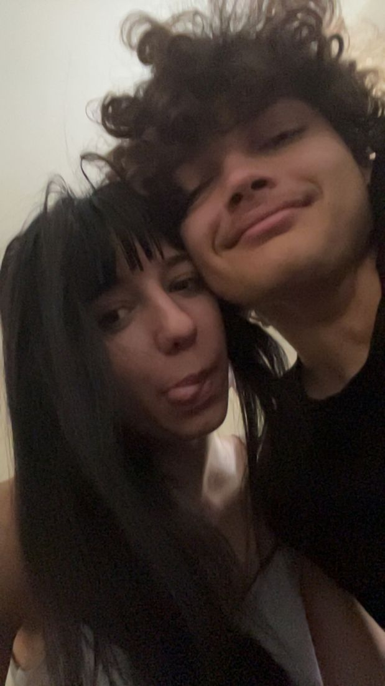
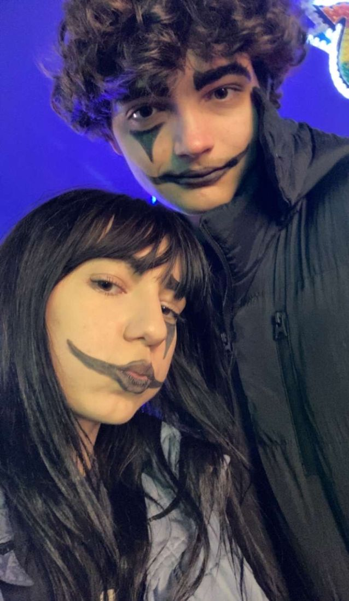
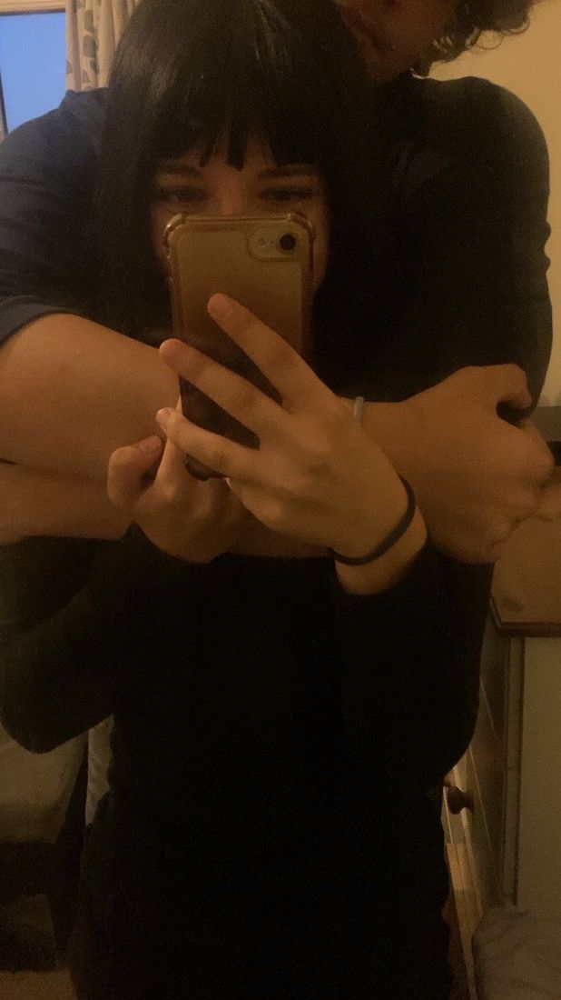
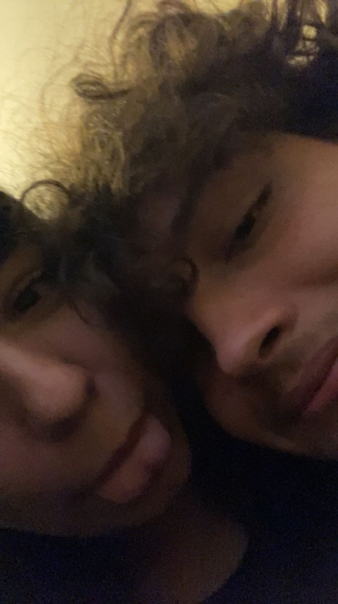

To my favourite person
Christmas is a special time of year, but I already know what my favourite gift is.
Am I lucky enough to have the best Christmas gift ever?
Choose carefully.

Christmas is a special time of year, but I already know what my favourite gift is.
Am I lucky enough to have the best Christmas gift ever?
You are genuinely the best thing that has ever happened to me.
I wouldn't change a single thing about you, or about the time we spend together. You make ordinary days feel special, and the quiet ones feel like home.
I hope I get to make you as happy as you make me, today and every day after.






For you, always.
I want all of you. I want you wiktoria. Not just wiki not just my baby not just the sweet girl who cries over a bad day. You. All of you. Youre not a phase. Youre not just a girl.
I want the girl who hides her face after a cute moment. I want my baby. I want the girl who overthinks because of how deep her love is for me. I want my puppy. The one who cuddles into a corner and calls her boyfriend because the world gets too big. I want my sweet girl. I want the girl who takes her time to breathe and think but still struggles to take it all in. I want my babydoll. I want the girl who isnt perfect and has sharp edges able to be cuddled away even if for a moment.
I love youre imperfections. I want them. I dont want a robot who does everything knowing its going to be perfect. I want the girl i know who i can grow with. I want you. I want to grow into an old couple who walks through the park and has people smile at them. I want the scared girl deep inside because she is wiktoria too. I know you baby, i know you get scared realising just how much you care i know how it feels warm and calming at the same time and how every time you come to me for more because when i answer that phone call i know it makes you feel loved. All of me loves all of you. The little boy you brought out, the one that cries after being reminded of just how bad things can get has never felt so loved as too when that boy is cuddled by the girl who relates to it and holds me close to her heart so he knows its real. Im not perfect i know that but with you its like i could live in any moment for the rest of my life and die happy knowing that moment will be in my last 7 minutes.
This is slightly irrelevant with the paragraphs but a lot of the time i straight up think in class and just think of your hand in mine and if truly gets me through the day so much small things you do, we do gets me through the moments everything feels big. I love you and fr this time sleep well idk if ill do another i might. Im kinda considering it now. Im getting distracted I LOVE YOU MWAHHHHH
Everything i do with you wiki feels surreal like just perfect even when im upset like earlier it feels so warm and kind knowing not far away youre waiting for me to come to you and hold you in my arms. My heart feels so soft and blessed holding you in it its hard to describe so i write these elaborate paragraphs trying to put my words into it even when we are on call again like we are as im writing this i still enjoy those quiet moments where i get to set back a bit and just think about how truly lucky i am to even have met you. You’ve brought such joy and happiness into my life and i am scared ill lose you but even with that scared little thought i will always enjoy every soft and sweet and warm moment i ever spend with you and in the future like i said before if i can think of a future i want you in it and i wouldnt want it any other single way. Sometimes i get so happy just knowing how deeply connected weve become like damn i really got this 10/10 girl to reassure me and let me into her heart at the same time while mines been closed so long but its open for you and i hope you get comfortable in there because i dont want another single person to be in there at any other point. Hearing that sweet voice brings such calmness into my mind like a ocean at night or smth i know thats corny but what i mean is even though in some places im still rough and hard to deal with the centre where i view you is so calm and peaceful. I like when my heart beats fast even when we are laid together because every small beat reminds me just how close to my heart you are it feels like a hourglass thats managed to balance out so perfectly to try meet eachothers needs and wants its the best feeling ever anything with you reaches that best feeling because every second i spend with you brings me to a new level of just happiness wiki. I love you so much from youre stunning hair that may become purple to your feet which we joke about constantly, and i know as much of a strange person or being weird i know im your kind of weird and seeing you accept me like that brings me so much happiness. Youre my favourite person. My favourite pass time. My favourite thing to hold close.
Wiki my love, its difficult for me to put into words but i am infinitely grateful and proud of us and especially of you. You put up with me when i cant with myself, you take into account my feelings but dont wait to call me out on smth if theres a problem even if it ends in a idc from you lying if itd help if i changed it. I just love every single moment i ever spend with you wiki, it doesnt matter if its laughing at something stupid till our sides hurt or when you message me someone else made you laugh like that. The moments i cherish the most are the silent ones where every little look at each other speaks so much more than words describe. I love them so much because i can literally see in your eyes that you love me and theres nowhere else youd rather be in that moment. I just sit sometimes and think about how im so lucky to even have you and to have you to myself. I love you so much. I love the little things like when you say its not okay because you want a reaction to know what im actually thinking or how you lean into me after your body realises im actually there after missing me and even if youre mad at me you cant help but stay close. Even now when we are apart youre all i think about, all that i need want love and crave wiki. I love you so much its scary in a good way yes but its still scary but even then if i could choose someone to be scared with itd be you every time. I love you so much wiki. Im so truly deeply in love with all that makes you from your mind to your body. When we are apart like this it brings me down to earth and realise just how much i really do want you because when im at my mums yk i can hop on my bike be there in 10 easy right i cant do that here and it gives me a stinging feeling when i miss you that little bit more the further i am. You wiktoria are the most gorgeous and wonderful girl in my world so while you may not see it that in yours my eyes will always be on you. I mentioned that i write about you when i vent in my notes so i just thought id add them in this. “Im so scared to love wiki as deeply as i do. Every time i see her or feel her presence it brings me such safety and comfort” thats the first sentence of one and “ i have wiki my sweet girl and yet i feel not empty but so full and now im scared that filling feeling will disappear with wiki if she leaves.” Thats how deep i care for you wiki that when imagine myself being happy i imagine you and me. I treasure you so truly deeply wiki. I love you so much, ive told you before this is a fraction of my love for you i could write so many more and still have an infinite amount to say. I love you wiktoria.
I'm so lucky to have you.
Merry Christmas. I love you.